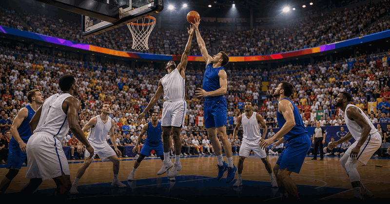
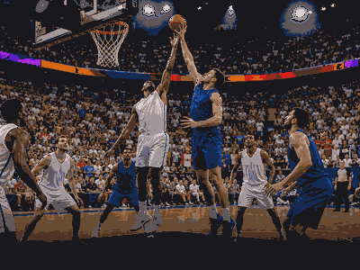

basketball event view
FIBA Women's Basketball World Cup
FIBA Women's Basketball World Cup keeps the evergreen overview and current edition details together in this framed event view.
FrequencyRecurring
Current edition2026
Main cityBerlin
FormatWomen's national teams
History viewEdition details in one place
Use the year switcher for recent editions. Date, venue, ticket and programme updates stay inside the same event URL.

More BasketballInterested in more basketball?Explore related events, places and calendar moments.